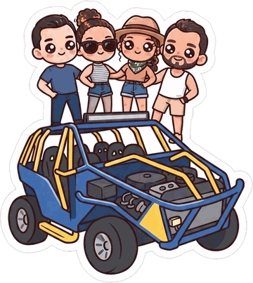

Saulo, Lorena, Ricardo & Michele · 17 a 23 de outubro
Ver o roteiro ↓Toque num dia para ver os horários, trajetos e o que está reservado.
Itens ligados a uma reserva são marcados sozinhos. O progresso fica salvo neste navegador.
São sete dias, com volta na sexta 23. A troca de cidade acontece no fim do dia anterior, para que nenhuma manhã seja gasta em estrada antes de um passeio — por isso a tarde de terça já vai para Ibicoara. As reservas estão fechadas, e o que tem hora de verdade (Lapa Doce no domingo, Pai Inácio, Poço Azul, Buracão, Pratinha) está marcado com ⚠️ no próprio bloco.
A aba Atrações traz, dia a dia, a ficha de cada lugar: foto, resumo e as leituras que sustentam a nota. O que está no roteiro aparece com ✅; o resto é plano B ou o que cabe se sobrar tempo. Dentro do roteiro, o link ℹ️ Sobre o lugar leva direto ao card.
Cada preço e horário do roteiro traz um selo com a sua origem. Preço muda: o que está marcado como estimado precisa ser confirmado antes de virar plano.